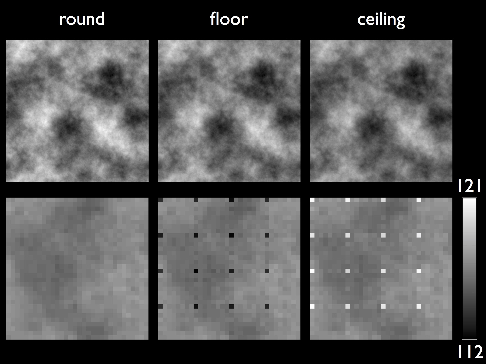
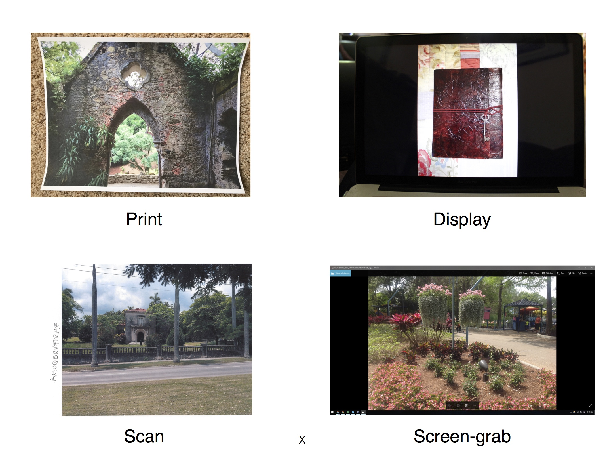
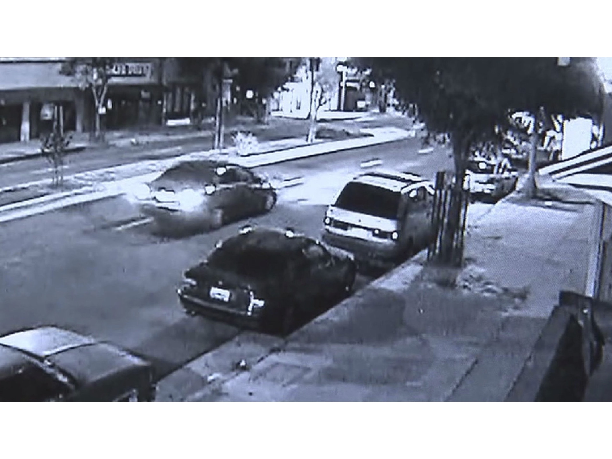

I am a third year PhD student in the Department of Computer Science at Dartmouth College advised by Prof. Hany Farid. I have previously worked as a software developer in the Adobe Illustrator team at Adobe, India. I received my master’s and bachelor’s degree in Computer Science from Indian Institute of Technology (IIT) Delhi, India and Harcourt Butler Technology Institute (HBTI), India. My primary research interest lies in multimedia forensics, image analysis, machine learning and computer vision.
Here is a copy of my CV.
Papers
-
"Rebroadcast Attacks: Defenses, Reattacks, and Redefenses",
W. Fan, S. Agarwal, and H. Farid,
European Signal Processing Conference (EUSIPCO), Rome, Italy, IEEE, 2018. (to appear) (pdf)
-
"A Diverse Large-Scale Dataset for Evaluating Rebroadcast Attacks",
S. Agarwal, W. Fan, and H. Farid,
IEEE International Conference on Acoustics, Speech and Signal Processing (ICASSP), Calgary, Alberta, Canada, 2018. (pdf)
-
"A JPEG Corner Artifact from Directed Rounding of DCT Coeffcients",
S. Agarwal and H. Farid,
TR2018-838, Department of Computer Science, Dartmouth College, 2018. (pdf)
-
"Photo forensics from JPEG dimples",
S. Agarwal and H. Farid,
IEEE Workshop on Information Forensics and Security (WIFS), Rennes, 2017. (pdf)
-
"Deciphering Severely Degraded License Plates",
S. Agarwal, D. Tran, L. Torresani and H. Farid,
Electronic Imaging, Media Watermarking, Security, and Forensics, San Francisco, CA, 2017. (pdf)
Research
|

|
-
JPEG Dimples:
Although the basic steps for JPEG encoding remain the same across different JPEG encoders, there are many aspects to this compression scheme that varies with the specific design and implementation choices made by an encoder. These variations can be exploited by forensic techniques to reveal traces of manipulation in digital images. One such aspect is the choice of the mathematical operator used to convert Discrete Cosine Transform (DCT) coefficients from floating-point to integer values. The use of directed rounding (ceiling or floor) for this purpose can lead to a periodic artifact in the form of a single darker or brighter pixel – which we term as JPEG dimples – in 8X8 pixel block of the JPEG images. An analysis of thousands of different camera models reveals a widespread prevalence of this artifact in real world JPEG images. Local manipulations like content-aware fill, re-sampling, compositing etc. in an image can disrupt the periodicity of this artifact in the altered region. We have shown that this local absence of dimples in an image can be exploited for the purpose of photo forensics to detect a wide range of digital manipulations.
|
|

|
-
Rebroadcast Detection:
Many forensic techniques, including the one described above, look for clues of modifications in the camera properties of an original JPEG file. This assumption can, however, fail in the presence of a simple rebroadcast attack in which an image is manipulated and then re-imaged, thus preserving the underlying camera properties in the image. A rebroadcast image can be generated by: (1) photographing a printed copy of an image; (2) photographing a displayed image; (3) scanning a printed copy of an image; or (4) capturing a screen-grab of a displayed image. We have collected a large-scale dataset comprising all four types of rebroadcast images and evaluated the efficacy of three state-of-the-art techniques on our dataset. We also trained a deep convolutional neural network (CNN) to detect rebroadcast images and showed that our network significantly outperformed the previous state-of-the-art techniques for this task.
|
|

|
-
Deciphering Severely Degraded License Plates:
License plate images obtained from surveillance cameras are often noisy and of low resolution images, on the order of 20 pixels in width. These low quality images appear with frustrating frequency in many forensic investigations. The inability of human observers to decipher such low quality images, brings forth the need for computational tools to perform this task. With the help of a large-scale simulation we first showed that useful distinctive information remains even in images of resolution as low as 1.9 pixels per character. We have trained a CNN to extract this information and recognized characters on degraded real-world license plate images.
|
Personal
I'm from Agra, India, the land of the Taj Mahal. When I'm not studying I love spending time cooking. My friends say I make delicious Aloo Paratha :D. Three years in New Hampshire have made me a little more adventurous. On weekends, I like to go for any outdoor activity such as hiking, biking, swimming, or just running in the neighborhood.
{kind=link}